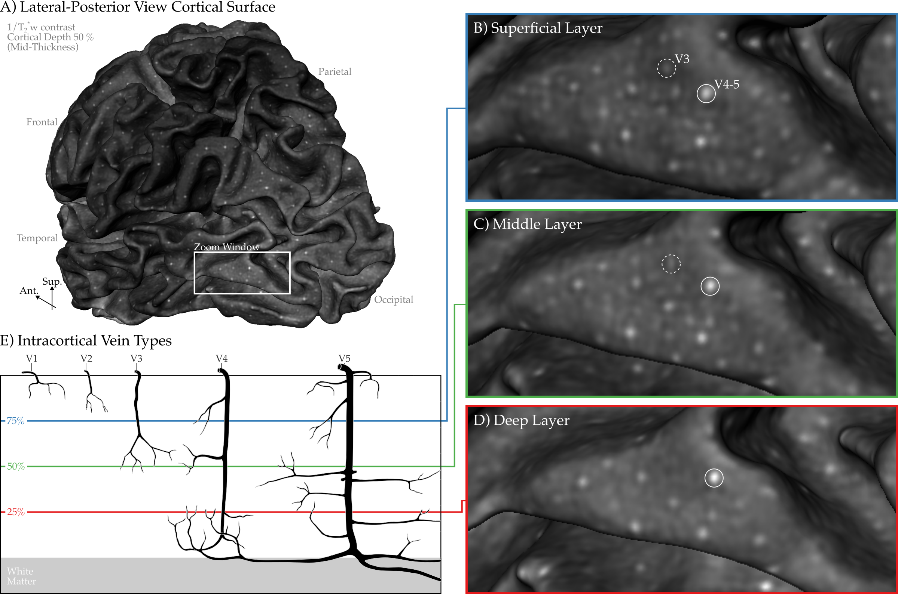
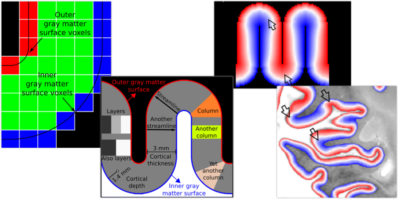
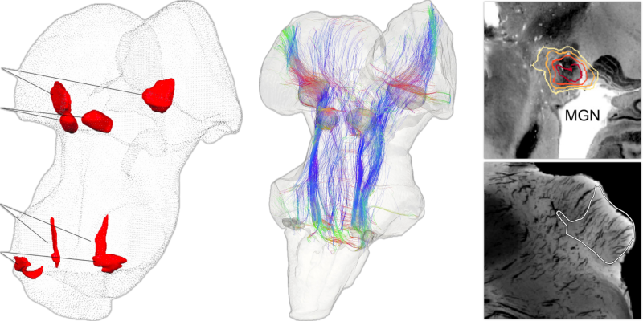
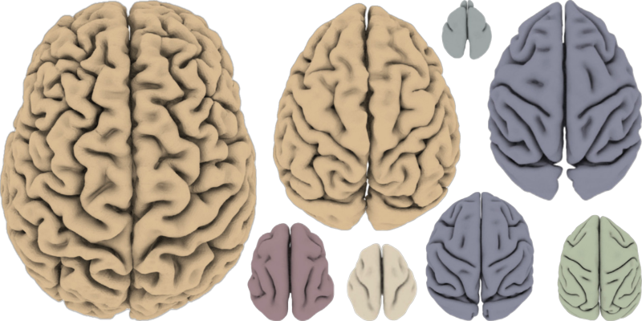
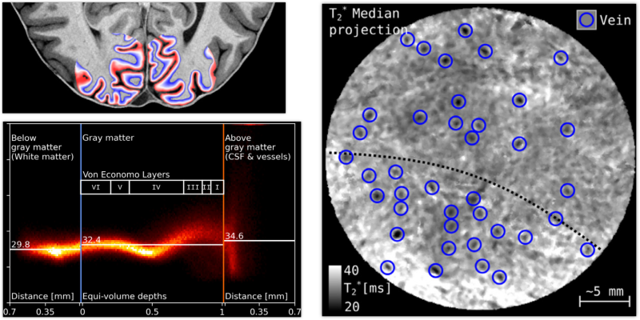
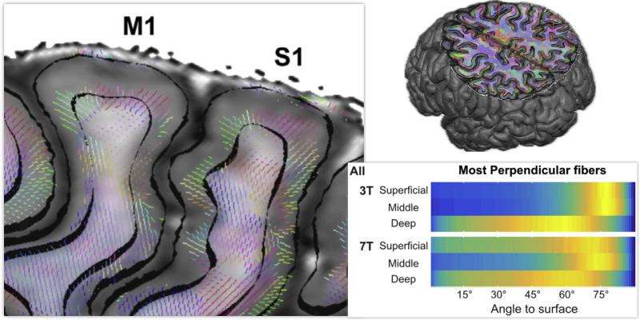

Whole-brain meso-vein imaging in living humans using fast 7-T MRI

Gulban, Stirnberg, ..., Kay, Ivanov
Science Advances (2026)
PDF
Pioneering meso-vessel imaging to link anatomy and function in living humans.
I use ultra–high resolution magnetic resonance imaging (MRI to explore the living human brain in unprecedented detail. Capturing such detail is only half the story. The greater challenge is making sense of it. To bridge this gap, I design new imaging protocols and build analysis tools that transform complex data into clear insights. My work combines advanced MRI methods with innovative software, such as LayNii, a widely used toolkit for high-resolution fMRI that enables researchers worldwide to investigate the brain’s fine-scale structure and function.
At Brain Innovation, I advance LayNii and support BrainVoyager, while sharing expertise through YouTube tutorials to make cutting-edge neuroimaging methods accessible worldwide. Alongside my industry role, I am affiliated with the Cognitive Neuroscience Department at Maastricht University, where I regularly publish on neuroscience, MRI physics, and neuroimaging methods, with a sharp focus on mesoscopic brain imaging.
ORCID: 0000-0001-7761-3727
[New Preprint - 2026 May] Intracortical vessel density mapping at mesoscale reveals regionally specific angioarchitecture in the human brain
[Link]
[New paper - 2026 Jan] Whole-brain meso-vein imaging in living humans using fast 7-T MRI
[Link]
Whole-brain meso-vein imaging in living humans using fast 7-T MRI

Gulban, Stirnberg, ..., Kay, Ivanov
LayNii: A software suite for layer-fMRI

Huber, Poser, Bandettini, ..., Goebel, Gulban
Mapping the human subcortical auditory system using histology, post mortem MRI and in vivo MRI at 7 T

Sitek*, Gulban*, ..., Ghosh, De Martino
Evolution of neocortical folding: A phylogenetic comparative analysis of MRI from 34 primate species

Heuer, Gulban, Bazin, ..., Toro
Mesoscopic in vivo human T2* dataset acquired using quantitative MRI at 7 Tesla

Gulban, Bollmann, Huber.,... Kay, Ivanov
Cortical fibers orientation mapping using in-vivo whole brain 7 T diffusion MRI

Gulban, De Martino, ..., Ugurbil, Lenglet